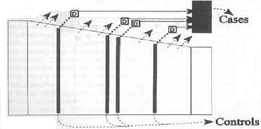
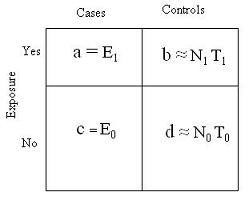
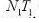
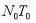
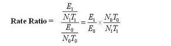
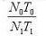

In this example, controls are sampled each time a case is diagnosed.

Details of Incidence Density Sampling Within a Cohort
In the above diagram, 4 cases occur at 4 different points in time giving rise to 4 risk sets of cases and controls.
Controls for each case are selected at random in each risk set from cohort subjects under follow-up at the time (called incidence density sampling).
It follows from the random selection, that a control can later become a case.
Results can be just as valid as using entire cohort.
Because the controls are selected randomly from those still under follow-up at the time a case is diagnosed, the sample of controls provides the same estimate of an association between a predictor and the outcome that one would obtain if all of those still under follow-up were used.
The schematic illustrates how matching on follow-up time would be sampling the person-time follow-up of the cohort as time progresses.
Imagine ending the study after the first event occurs.
A random sample of those still at risk at that time will give a ratio of exposed and unexposed person-time that is the same as the ratio obtained using everyone in the cohort at that time point (give or take random sampling error).
The same reasoning applies to each subsequent event. The sum of all those person-time samplings will approximate the total person-time follow-up of the cohort in the exposed and unexposed provided the control samples were taken independently of exposure (always the key issue).
Controls in Incidence Density Sampling in a Fixed Cohort Study Base
The key point is that with incidence density sampling in a fixed cohort study base
you use a population-based disease registry to identify all new cases of disease during a defined time period.
How OR = Rate Ratio in a Case-Control Study with Incidence Density Sampling
So analogously to showing how the OR in a case-cohort design estimates the risk ratio, using the graphic below shows how the OR in a case-control design with incidence density sampling estimates the rate ratio because
the controls are providing an estimate of the proportion of exposed to unexposed person-time.

EXPOSURE ODDS IN CASES = a/c
EXPOSURE ODDS IN CONTROLS = b/d
Sampling Using Estimate of Rate Ratio
In obtaining a risk ratio, we estimated the propotion of exposed and unexposedpersons.
For calculating a rate ratio in a case control study, we estimate the proportion of exposed and unexposed person-time.
When we talk about rates, we are talking about person-time
When we talk about measures of association, we are talking about incidence rates within the groups of exposed and unexposed persons.
CALCULATIONS:
To calculate the risk ratio in a case-control setting we need to get an unbiased estimate of the proportion of persons with and without the exposure.
For the rate ratio we need an analogous estimate of exposed and unexposed person-time.
Estimate of Rate Ratio Calculation
As you can see in the calculation below if we can estimate the proportion of unexposed person-time to exposed person-time in a case- control study, we can estimate the rate ratio.Rate ratio (person-time) in cohort
where exposed = 
and unexposed = 

So analogous to estimating risk ratio, we need to estimate the proportion: 
THUS, OR in a case-control design with incidence density sampling estimates the rate ratio because
the controls are providing an estimate of the proportion of exposed to unexposed person-time.
Examples of Incidence Density Sampling
These are examples of incident density in a dynamic primary study base.
An additional example of incidence density sampling as well as selection bias can be seen on the Coffee and Pancreatic Cancer Study in Selection Bias.